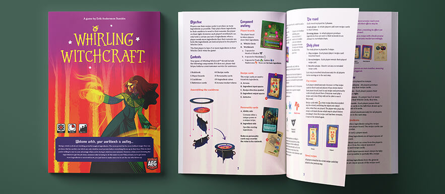

Having a clear and easily understandable rulebook is extremely important; it’s the first impression many players get of your game and you don’t want that impression to be soured by frustration. If the rulebook is ambiguous some players may not even learn the game correctly, further souring the experience of your game. Therefore, it’s important to have a professional rulebook writer edit your rulebook text when you’re publishing a game. However, it is also important to have a clear rulebook when you, as a game designer, are playtesting your game. Otherwise players might play your game wrong, and provide feedback that in the best cases is not useful and in the worst cases leads you astray.
Whirling Witchcraft, a game newly released by AEG, has a really good rulebook if I may say so myself. I might be biased though, as I’m the one who wrote it. For all of you who might need to create a great rulebook for one reason or another, I will share the process I went through when writing the rules text for Whirling Witchcraft. If you’d like to read the rulebook, it’s available through BGG.
In order to write a good rulebook, you first need to know the game well. For me, with Whirling Witchcraft, this journey started a bit differently than it usually does; I had actually played the prototype of the game way before it got picked up by AEG. And when I say played I mean played the heck out of it. I met Erik Andersson Sundén (the designer) at a local board game convention and kept bringing new friends over to try the game. I think I played it at least ten times during the three day convention; then I printed the PnP-files and introduced it to anyone who would (and wouldn’t) listen. It’s safe to say I was well acquainted with the game even before AEG approached me.
Even though I had played the game a ton, some changes that had been made during AEGs development meant there were still some new rules I had to learn, but I definitely got a head start on this one. My first order of business was to carefully read through their current rules text, paying close attention to any changes to how I knew the game. While doing this, I simultaneously had a look at the prototype components, to make sure I got everything right. Had I not known the game beforehand, I would have wanted to at least play the game before starting the work on the rulebook.
When learning (or teaching) a game, it’s not enough that the information is clear; it also has to be presented in the right order. Therefore, the first thing I do when editing a rulebook is figure out what order the information needs to be laid out in.
Largely, the overall order I aim for in rulebooks is:
Most of these don’t differ a lot between different games, but “How to play” is where it gets really interesting; you’ll have to look closely at the game which you’re writing the rulebook for, because there is no one-size-fits-all solution for that section. A good rule of thumb is to explain the rules in the order that they occur naturally in the game, but always make sure that players get enough of an overview that they understand what they’re learning. If the game, like Whirling Witchcraft, is played over a series of rounds, and the round is divided into a number of phases, I like to start by explaining this and at the same time give a super short (like almost not even a complete sentence) overview of what each phase is all about.
In the case of Whirling Witchcraft, the game was actually not divided into phases before I started working on it, but I saw that explaining the game would be easier if it was. It didn’t change the game, it just changed how we could talk about the game. That’s also part of organizing the rulebook.
At the beginning of each phase, I did a similar thing, where I gave an overview of the different steps involved in that phase. After that, all I had to do was describe the steps in detail.
Whirling Witchcraft is also a bit odd in the sense that the way the game is played, it doesn’t fit to have a “Game end” section. This is because one of the steps in the middle is to check if anyone has met the victory condition. Explaining that without going through how you know (and what to do) if someone has would be rather pointless, and adding a “Game end” section at the end just to repeat everything a second time would be a waste of rulebook space that could be better utilized. This teaches us that even my broad rulebook order sometimes has to be disrupted because of how the game is designed.
The rest of the work is all about rewriting the text and making it as clear as possible. I have to look at each rule and figure out how to perfectly word it in a way that makes it easy to understand without leaving it open to interpretation. It’s very important that rulebooks are unambiguous in order to teach the correct rules every time, and if there is ever any uncertainties about a rule, players should be able to find it in the rulebook and get a clear answer.
When working on the rulebook for Whirling Witchcraft I worked closely with both the designer and developer for the game. We worked in a number of iterations where I was able to make changes based on their comments, and I could check with them before making any major changes (like dividing the game into two phases).